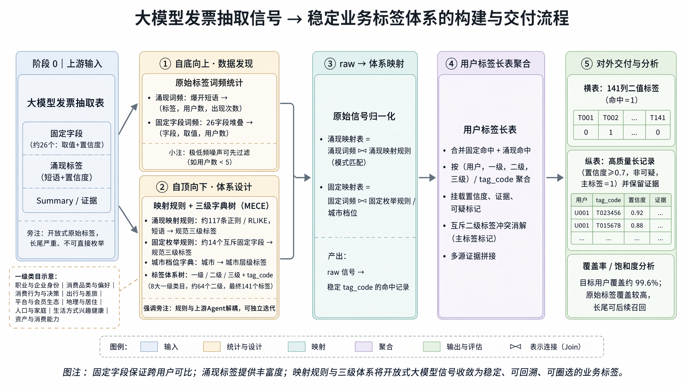
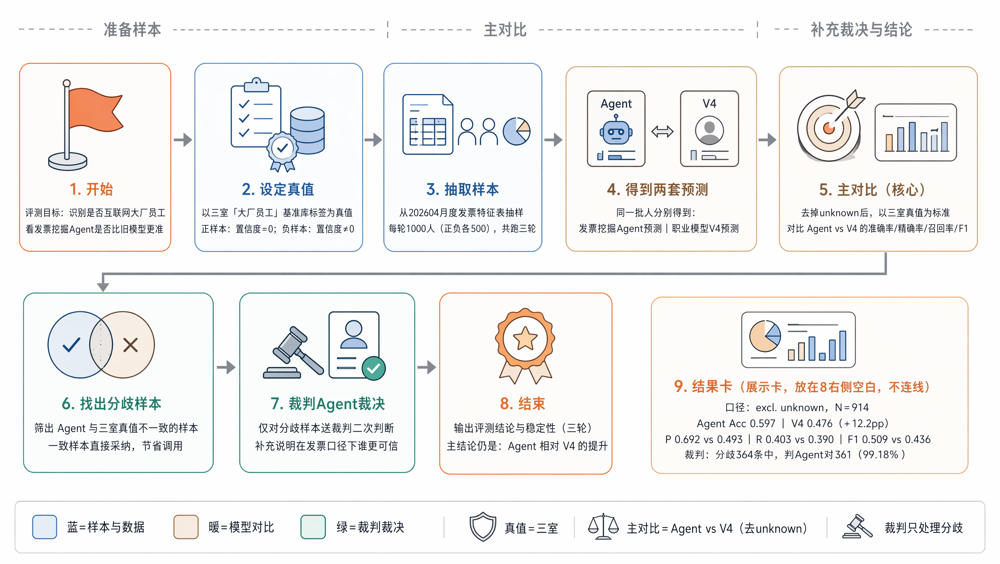
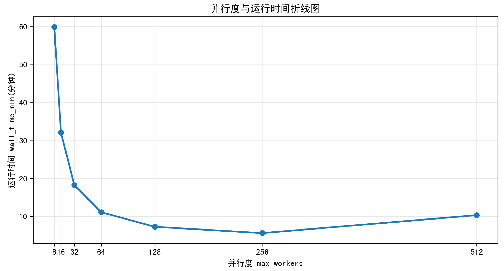
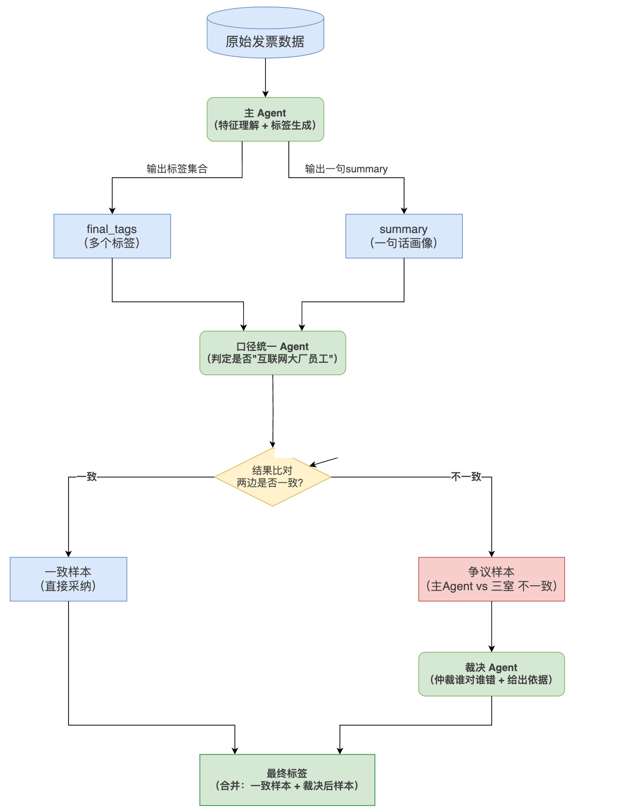
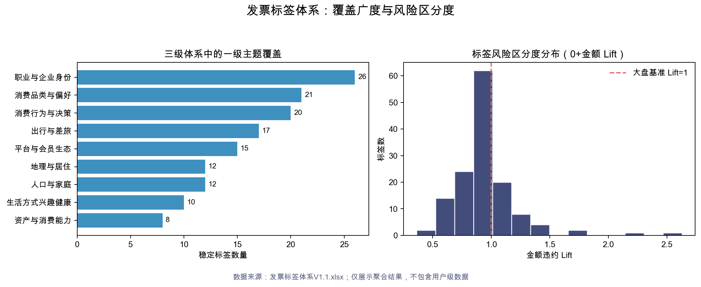

04 · 主要负责人 · 2026.04
大模型驱动的发票用户标签体系构建与业务应用
AgentFlow 负责快速生产丰富、可解释的开放标签；后续归纳机制将长尾自由短语收敛为稳定的业务主题、窄口径标签和敏感主题池。
- 自由标签输入
- 2,338 种
- 单用户长尾
- 约 76%
- 170 万用户推理周期
- 10 天 → 2.4 天
Situation｜开放标签足够丰富，但无法直接稳定消费
发票试点近一个月覆盖约 171 万开通用户，近一年约 541 万。AgentFlow 生成了 2,338 种自由标签，但约 76% 只在单个用户上出现。生成能力解决了“能否快速挖出标签”，却没有解决“标签能否稳定入库和圈选”。
固定 Schema 容易统计，但新增维度需要改表和全量重跑；长期堆规则或训练专用模型需要持续人力；黑盒分数缺少字面证据，产品很难核对标签为什么成立。发票数据包含 buyer、seller、item、金额和活跃度，并能回落到原始字段，适合作为可解释标签体系试点。
Task｜把自由短语沉淀为可入库、可圈选、可治理的标签资产
我的任务不是只完成一次 Agent 打标，而是建立一套持续运转的标签体系：开放标签经过清洗、归并和场景化后，形成业务主题标签、窄口径衍生标签和敏感主题池；Summary + evidence 保留原始语义，供产品评审与规则回流。
这一任务的难点在于“丰富度”和“稳定性”的平衡。标签太开放会难以统计，标签太固定又会失去长尾发现能力；同时健康等敏感主题必须有治理机制，不能直接混入生活方式标签。
Action｜先开放挖掘，再稳定归纳，最后产品回流
第一步：设计标签供给链路。 上游 AgentFlow 遵循“代码做确定性规则，LLM 做语义判断”。代码负责清洗、派生、白名单、Schema 校验和置信度重打分；LLM-A 决定搜索哪些陌生实体，LLM-B 负责最终打标与 Summary。每条标签统一输出 value、confidence 和引用真实 buyer / seller / item 的 evidence。
第二步：构建标签归纳体系。 固定字段、涌现短语与 Summary 进入同义清洗和敏感过滤；长尾短语归入稳定主题；主题组合为人群口径；最终入库、圈选、评估和治理，并通过产品评审持续回流。

第三步：用评测和裁判复核验证方案。 固定 Schema 约有 20 个枚举字段，单用户通常输出 3–7 个标签且包含较多 unknown；涌现方案输出 2,338 种自由短语，单用户得到 5–10 个有效标签，并能细化到具体职业、会员和生活方式。

第四步：工程提效与二次 Agent。 prefix cache、搜索摘要截断和小模型切换用于降低推理成本；二次 Agent 使用阶段一的 buyer_top5、occupation 和原始证据，将开放语义收敛为严格二分类，只对争议样本调用裁判 Agent。


Result｜形成标签资产闭环，并支撑业务评估与治理
以大厂员工金标为例，Agent Accuracy 为 0.592，V4 为 0.490；Agent Precision 为 0.675，V4 为 0.488。去除 unknown 后 Accuracy 提升 12.15 个百分点；裁判 Agent 在分歧样本中支持新方案的比例为 99.18%。
工程侧 prefix cache 提速约 21%，搜索摘要截断提速约 36% 且 F1 未下降；切换小模型后，170 万用户推理周期由约 10 天缩短至 2.4 天。三级体系进一步在九个一级主题上检查覆盖，并对 138 个可评估标签统计 0+ 金额违约 Lift。

HVLR 是主题归纳的代表案例。V1 直接在 50 万以上涌现表达中做语义匹配，Lift 约 1.07；V2 改为九类正向主题命中并叠加负向排除，源材料记录核心人群 Lift 约 0.14。敏感标签治理则把健康主题池从 12.05 万压到目标约 1.5–3 万，形成十二类负向主题和排除规则。
最终交付不是一批一次性标签，而是可入库、可圈选、可评估、可审计的标签资产。AgentFlow 保留语义丰富度，归纳体系提供稳定口径，两者可以分别迭代。
Review｜口径、隐私与待补材料
- 发票是试点，方法可迁移到商业支付和黑灰治理，但迁移效果需要在新场景重新验证。
- 裁判 Agent 的 99.18% 是分歧样本支持率，不等同于全量准确率。
- HVLR 的 “Lift 约 0.14” 在源材料中缺少完整定义，当前保留原值并明确待补口径。
- 涉及用户级明细、真实 UIN、商户证据和内部表名的材料不直接对外展示。
- 下一步需要补充脱敏用户案例、HVLR 分层图、敏感治理漏斗和版本演进表。